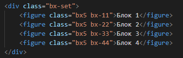

Свойство z-index
По своей природе веб-страницы часто считаются двумерными, отображающие элементы по осям х и у. Однако, когда вы начинаете позиционировать элементы, они иногда располагаются поверх друг друга.
Чтобы изменить порядок выкладывания этих элементов по оси z должно использоваться свойство z-index.
Как правило, элементы располагаются по оси z в том порядке, в каком они появляются в DOM. Элементы, приходящие сверху DOM, расположены позади элементов идущих после них. Изменение этого порядка с помощью свойства z-index является довольно прямолинейным. Элемент с наибольшим значением z-index появится сверху, независимо от его расположения в DOM.
Чтобы применить свойство z-index к элементу, необходимо сначала задать значение position как relative, absolute или fixed. То же, как если бы вы хотели применить свойства смещения блока.
В приведённом ниже примере, без свойства z-index каждый блок будет позиционироваться точно, начиная со второго блока расположенного поверх первого, а третий блок расположен поверх второго и т. д. Изменение порядка через свойство z-index теперь позиционирует второй блок поверх остальных, затем третий блок под ним, а четвёртый под третьим.
Поменяйте значения свойства z-index и обратите внимание, как элементы меняют свой порядок.
Демонстрация z-index

z-index
Любые позиционированные элементы на веб-странице могут накладываться друг на друга в определенном порядке, имитируя тем самым третье измерение, перпендикулярное экрану. Каждый элемент может находиться как ниже, так и выше других объектов веб-страницы, их размещением по z-оси и управляет z-index. Это свойство работает только для элементов, у которых значение position задано как absolute, fixed или relative.
Значение по умолчанию auto
Синтаксис
z-index: <число> | auto
Значения
В качестве значения используются целые числа (положительные, отрицательные и ноль). Чем больше значение, тем выше находится элемент по сравнению с теми элементами, у которых оно меньше. При равном значении z-index, на переднем плане находится тот элемент, который в коде HTML описан ниже. Допустимо использовать отрицательное значение.
Кроме числовых значений применяется auto — порядок элементов в этом случае строится автоматически, исходя из их положения в коде HTML и принадлежности к родителю, поскольку дочерние элементы имеют тот же номер, что их родительский элемент.
В данном примере при наведении курсора на карту она выходит на передний край, частично перекрывая остальные собой остальные изображения
Изменение порядка карт